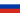
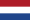
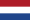

Jules Rimet, le président de la FIFA de 1921 à 1954, a décidé de créer cet évènement en 1924.
Jules Rimet, le président de la FIFA de 1921 à 1954, a décidé de créer cet évènement en 1924. 
The European Football Championship is a sport event combining the 24 best european football teams.
Jules Rimet, le président de la FIFA de 1921 à 1954, a décidé de créer cet évènement en 1924.
Tenue pour la première fois en Uruguay en 1930, elle continue de se tenir tout les 4 ans depuis. Elle a seulement arrêté en 1942 et en 1946 à cause de la 2e Guerre Mondiale.
Cet évènement n'est pas seulement tenu pour les hommes. En effet en 1991, la première édition de la coupe de monde féminine s'est tenue en  Chine.
Elle aussi se déroule tout les 4 ans depuis et se déroule 1 an après celui des hommes.
Chine.
Elle aussi se déroule tout les 4 ans depuis et se déroule 1 an après celui des hommes.
La Coupe du monde est un évènement très attendu par des millions de gens.
Selon certaines statistiques, environ 3,6 milliards de personnes ont regardé la Coupe du Monde en  Russie en 2018.
En 2014, environ 3,2 milliards de personnes ont regardé cet évènement, tenu au  Brésil.
Brésil.
La Coupe du Monde, comme mentionné plus haut, rassemble 32 équipes nationales masculines pour 64 matchs durant une période d'un mois. Les premières deux semaines sont allouées aux matchs de poules au cours desquelles 16 équipes sont éliminées. Ensuite, après la phase éliminatatoires des huitièmes de finales, il restera 8 équipes. Les quarts de finales élimineront 4 équipes, les demi-finales élimineront 2 équipes, qui iront au match pour la troisième place, et les gagnants des matchs de demi-finales s'affronteront en finale. Le match pour la troisième place déterminera l'ordre des deux équipes éliminées durant les demi-finales. La finale permettra de déterminer le vainqeur du tournoi.
Par exemple, pour les hommes, en 2018, la France a remporté le tournoi en battant la Croatie 4-2.
Pour les femmes, les  États-Unis ont romporté le tournoi en battant les  Pays-Bas 2-0.
États-Unis ont romporté le tournoi en battant les  Pays-Bas 2-0.
Pour les hommes, la France gardera son titre jusqu'au prochain tournoi au Qatar en 2022.
Pour les femmes, les États-Unis garderont leur titre jusqu'au prochain tournoi en  Australie et en
Australie et en  Nouvelle-Zélande en 2023
Nouvelle-Zélande en 2023